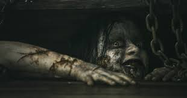

Menu Principal
"Esta pagina les dara a conocer temas considerados paranormales y para algunos casos mitos que son considerados como demoniacos observados desde un punto religioso,De acuerdo a la investigación que realizamos podemos comprobar que no solo son "mitos" , son temas que constan de gente que vivio el suceso y sabe ampliamente de estos temas.
No buscamos cambiar sus opiniones puesto que cada uno es libre de creer lo que uno desee".
Brenódy
Diana Osorio, Brenda Ramírez, Noe Villanueva
=Las Brujas=
Una bruja, o un brujo, es una persona que sabe manipular las energías del universo en beneficio o perjuicio de alguien o de algo.
- Las brujas blancas, sus poderes mágicos los obtienen a través de ángeles, santos o espíritus de difuntos y los utilizan en beneficio de la comunidad a la que sirven.
- Las brujas negras quienes tienen un pacto con el diablo y se entregan a la adoración de Satanás.
Las brujas tienen forma de "bola de fuego" cuando se encuentran en el aire ;Para poder convertirse la forma de bruja hacen un ritual, al finalizar ,sus piernas son transformadas por "patas de guajolote" y salen en la madrugada a beber la sangre de los bebes que las mantiene jovenes.
La mayoria de la gente cuando oye hablar de las brujas se imagina comunmente una persona con sombrero, nariz alargada y con verrugas tal y cual las describen en las las peliculas; Pero las brujas no son asi , son personas comunes como nosotros.
Personas que consultamos nos contaron que para alejar a una bruja de tu hogar y cuando tienes a un recien nacido es:
- Sal en grano en forma de circulo
- Poner tijeras de acero en forma de cruz
Brenódy
Diana Osorio, Brenda Ramírez, Noe Villanueva
=Nahuales=
La palabra Nahual proviene del azteca que es Nahualli que significa :
vestidura o piel , y se refiere a la habilidad de transformarse en una criatura mitad hombre, mitad animal (lobo, jaguar, lince, toro, águila, coyote...). Ese vocablo también se refiere a la nigromancia, ocultismo y malicia.
Según las creencias ancestrales, un nahual es una persona que a través de la brujería tiene la capacidad deconvertirse en animal; creencia que no dista de la realidad cuando se encuentran evidencias e historicas que relatan.
Los nahuales acuden a los camposantos para realizar actos de santería o brujería, relacionados con la magia negra, donde se invoca a los seres malignos que no encuentran el descanso entre las enigmáticas.
Se transforman en animales para robar.Tienen su origen desde épocas prehispánicas y aunque no hay teoría sustentable que explique la transmutación de estas criaturas algunas teorías ocultistas.
Diana Osorio, Brenda Ramírez, Noe Villanueva/h4>
=Ouija=
La Ouija es un tablero en el que se encuentran grabados y representados todos los caracteres del alfabeto, los números de 0 a 9 y en un lugar preferente el Si y el No. está sujeto a modificaciones también puede ser dibujada sobre un papel y como planchette o tablilla se utiliza un vaso.
Puede llegar a ser muy peligroso si la sesión no es orientada por un experto.
Las sesiones de Ouija se practican normalmente en lugares muy tranquilos alrededor de una mesa y con un mínimo de cuatro participantes. Usualmente se elige una habitación tranquila dejarse dominar por el supuesto contacto puede traer graves consecuencias
Aleister Crowley afirmó que “no es ningún juego y las personas que lo utilizan caminan en un terreno peligroso, pues les dan permiso a cualquier espíritu desconocido para comunicarse con ellos”.
Para muchos expertos la práctica de la Ouija permitiría abrir de par en par las puertas hacia dimensiones cercanas e imperceptibles a la nuestra, contactando así a seres que en ocultismo reciben el nombre de “bajos astrales” o “cascarones”, vale decir, entidades poco evolucionadas y todavía aferradas al mundo físico; o bien “espíritus sin luz”.
Los supuestos casos sangrientos relacionados con el uso de la Ouija no son escasos:
En 1972, Jennifer Lynn Sprigman, una chica de 14 años que vivía en Illinois, jugó a la Ouija con una compañera de la escuela y lo primero que le preguntó a la tabla fue a qué edad iba a morir. La aguja dio como resultado el número 18 y, posteriormente, apuntó las palabras “asesinada” y “estrangulada”. El 3 de octubre de 1976, dos semanas antes de que Lynn cumpliera 18 años, la chica falleció a manos de un estrangulador que jamás fue capturado.
Brenódy
Diana Osorio, Brenda Ramírez, Noe Villanueva
=Posesiónes=

A lo largo de la historia diferentes civilizaciones y religiones hablan de espíritus desencarnados que invaden los cuerpos vivos de los seres humanos, controlando sus propios deseos de forma física. La actual Iglesia Católica es una de las instituciones que cree en la idea de la posesión demoníaca, promoviendo en cierta medida Pero la Iglesia han cometido ciertos errores a la hora de “exorcizar” a personas que sufrían enfermedades psiquiátricas.
Según los expertos la posesión demoníaca consta de 5 niveles:
Manifestación:
Una persona de mente más débil o de baja autoestima sin ningún tipo de intención invita a la entidad a entrar en su cuerpo.
Infestación:
El demonio empezará a utilizar a su victima en lo que puede parecer típicos signos demoníacos inteligentes. La entidad puede presentarse como el espíritu de un ser querido o incluso de un ángel. Se gana la confianza de su víctima, por lo que la entidad puede influir en la persona y, finalmente, tomar el control total.
Opresión:
Cuando un individuo está bajo la opresión demoníaca la entidad comienza a afectar a la persona psicológicamente, físicamente y emocionalmente. El objetivo es hacer que la víctima renuncie a la lucha o a la voluntad de vivir y sobre todo a su alma, pudiendo conseguirla mediante el suicidio.
Posesión:
Cuando una persona llega a este nivel se le llama posesión completa. El demonio ahora tiene el control sobre los pensamientos individuales de las emociones y de la conducta.

Destrucción de la victima:
El único propósito de la posesión es la muerte del huésped.Cuanto más dolor y sufrimiento que la entidad pueda hacer, mejor.
Brenódy
Diana Osorio, Brenda Ramírez, Noe Villanueva
=Lugares paranormales=
Un lugar paranormal es la presencia de espiritus o almas en pena, que por alguna razón estan vinculadas a ese lugar.
Comunmente estas almas que se llegan a quedar en esta dimesión son porque se quedaron con una deuda o asunto pediente y buscan una manera para manifestarse.
Mas sin en cambio en algunos casos, personas que practicaban actos satánicos o rituales, utilizaban medios para tener contacto con entes del mas hallá y dejaron abiertos portales malignos que hacen que se manifiesten almas o demonios con el propósito de hacer daño a la gente que habita ahí.
Estos son capaz de manifestarse muy dificilmente logran alcanzar la luz y viven atormentando durante muchos años incluso siglos.
Brenódy
Diana Osorio, Brenda Ramírez, Noe Villanueva